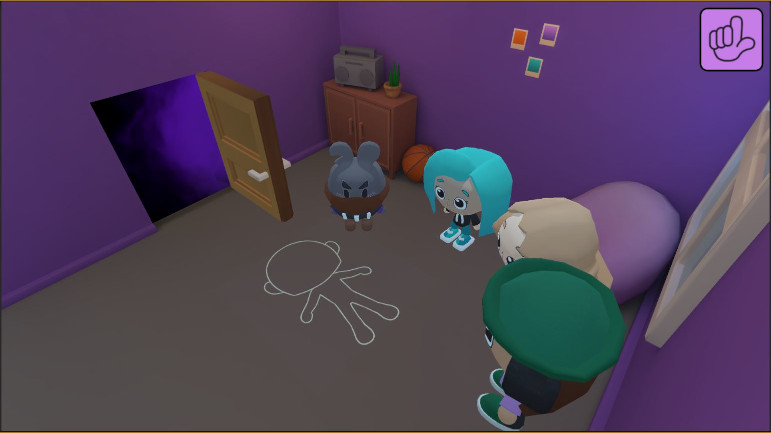

Versatile worker: coding, gaming, and graphics
This project was my second portfolio project that I made while studying in Metropolia. I was the lead coder/designer for this project and the students in Stadin AO provided the art assets for this game. The game was made for YLE’s new gaming related streaming channel, Luuttiklubi. The idea was to create a point and click game that could be played on the stream. This project faced numerous challenges during development, leading to an unfinished game, but we invested significant effort into it and managed to create a base for a game.
So, what went wrong and what can I learn from this project? When developing games as a team, it's crucial to maintain a clear project vision and adhere to a strict schedule. In this project we did a poor job on both, which resulted in every team member having their own idea on what kind of project we were making. In the end we had to cut a lot from the game to streamline it and we had no time to fix bugs.
In the end I did my best and worked hard to make a functioning game to present for rest of the class, but I am not willing to finish this game as I see no future in this project.